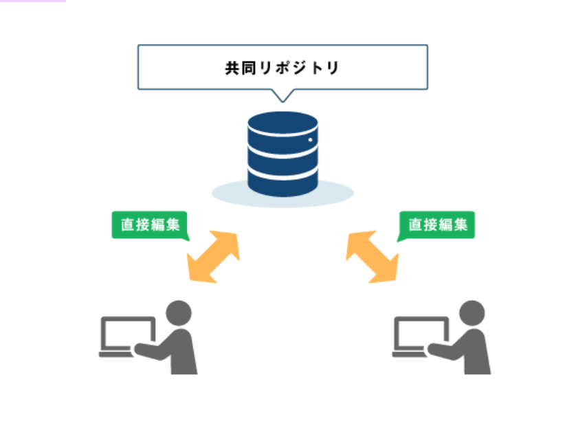
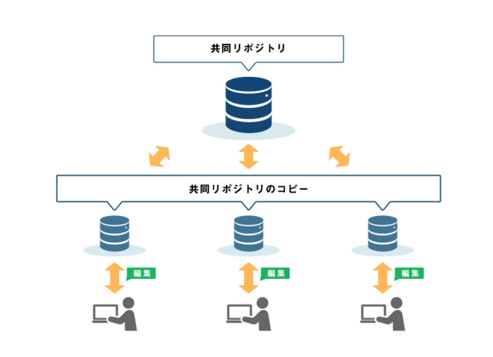

第１回のまとめ
gitについて
「gitとは」
分散型バージョン管理システムのことで、エンジニアを中心に使われているツールのこと。
「特徴」
元フォルダのコピーを手元に置いておけて、自由に編集できること。
つまり、、、ファイル編集やチーム作業でのミスの削減や手間が省け、効率がよくなった!!
「中央集中型システムと分散型システムの違い」
中央集中型システム
集中型バージョン管理システムとは、1個のリポジトリ設け、そこへ複数人でアクセスして同時に開発
を行うことを実現する仕組み。
メリット
・１個のリポジトリに対し変更を登録していくというシンプルで分かりやすい仕組み
デメリット
・オフラインだと変更を管理できない
・共同リポジトリをメンバー全員で編集するため、競合が起こりやすくなり、
自分の変更が必ずしも管理されるわけではない

分散型バージョン管理システム
分散型バージョン管理システムとは、複数のリポジト
リでファイルのバージョンを管理する仕組み。
メリット
・自分の変更は必ず管理される
・オフラインでも変更を管理することが
できる
個人ポジトリが共同のリポジトリのバックアップになる
デメリット
・仕組みがやや複雑である

リポジトリとは
作成したファイルやディレクトリの状態を保存・記録しておく「場所」のこと。
htmlについて
「htmlとは」
HTMLとは、Webページを作成するためのマークアップ言語の1つ。
HTMLを使用することで、テキストや画像、音声、動画などのコンテンツをWebページ上に表示することができる。
「マークアップ言語とは」
マークアップ言語とは、文章やデータの構造や意味を表現するために使われる
コンピュータ言語の一種のこと。
「htmlの基本用語」
まずはタグ・要素・属性の3つ!
タグ
表示形式と範囲を指定する
要素
タグとテキスト情報を合わせたページ
属性
タグに性質を与える
「HTMLとCSSの関係」
HTMLがページの構造を記述する言語であるのに対し、CSSはページのレイアウトや
装飾を記述する言語である。
外部サイト【初心者】
【バージョン管理】中央集中型システムと分散型システムについて
ドキドキしないためのGit解説～概念編～
HTMLとは？初心者向けに基礎知識を分かりやすく解説
HTMLとは？初心者向け/簡単にわかりやすく３分で解説